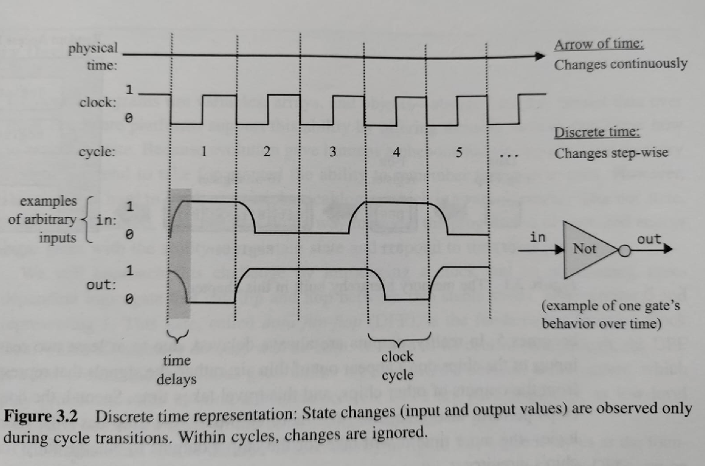
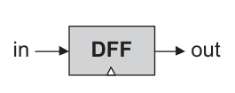
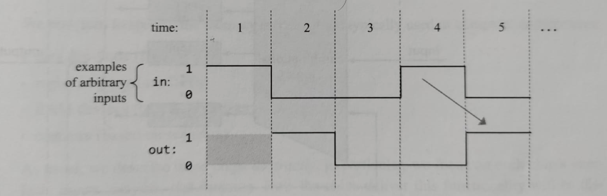
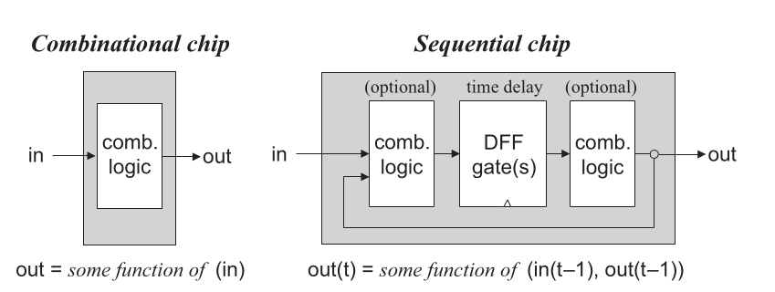
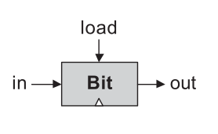
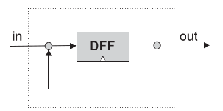
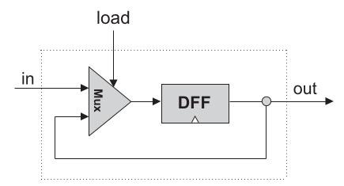
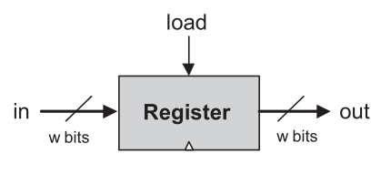

Sequential Logic
How can a circuit remember?
What Is Missing from Our Computer?
Every chip we built computes from its current inputs: gates, adders, and the ALU.
A running program needs stored values, memory locations, and the address of the next instruction.
State is information retained from an earlier time.
Representing Time with a Clock
- Clock
- A signal broadcast to all sequential chips so they agree on time.
- Tick and tock
- The two phases of the clock signal.
- Cycle
- One complete tick-tock interval; we treat it as one discrete time unit.
- Commit
- Stored outputs update only at cycle boundaries.
What Happens During a Cycle?

- During a cycle
- Combinational logic reacts to the input values it currently receives.
- At a boundary
- Sequential chips commit their stored outputs.
- Why it matters
- Without clock cycles, phrases like "previous input" and "next output" are ambiguous.
Data Flip-Flop (DFF)
A Data Flip-Flop (DFF) is the primitive one-bit time delay used by the simulator.
- Chip name:
- DFF
- Inputs:
in- Outputs:
out- Function:
out(t)=in(t-1)- Implementation:
- Primitive, supplied by the simulator.


Combinational Logic and Sequential Logic

out = f(in)Output depends only on current input values.
out(t) = f(in(t-1), out(t-1))Output can depend on earlier input values and earlier stored state.
Next: understand why feedback needs a time delay.
Why Feedback Needs Time
If a circuit output immediately feeds back into its own input, the output depends on itself at the same instant.
The feedback refers to the previous cycle, so the circuit can remember a value without creating an immediate circular dependency.
Next: define the one-bit storage cell we want to build.
What Is a One-Bit Register?
A one-bit register is a storage cell that remembers one bit until we explicitly load a new bit.
- Read
- The output continuously shows the currently stored bit.
- Hold
- If
load=0, keep the stored bit even ifinchanges. - Load
- If
load=1, store the input bit at the next clock boundary.

The Hack platform calls this one-bit register chip Bit.
Building a One-Bit Register: First Try

- It is not clear how we will ever load this device with a new data value.
- There is no means to tell the DFF when to draw its input from
inand when fromout. - Internal pins must have fan-in 1: each internal pin must be fed from a single source only.
Correct Implementation of a One-Bit Register

- Introduce a multiplexor to resolve the input ambiguity.
- The Mux select bit becomes the register's
loadbit. - If
load=1, the register starts storing the new value onin. - If
load=0, the register keeps storing its internal value.
The Bit Contract
- Chip name:
- Bit (1-bit register)
- Inputs:
in, load- Outputs:
out- Function:
- If
load(t-1)thenout(t)=in(t-1); elseout(t)=out(t-1).
Probe out. This does not require load=1.
Put the new bit on in and set load=1. The value appears next cycle.
Trace a Bit
Use the Bit behavior: load=1 loads at the next boundary; load=0 holds the old value. Assume the stored bit starts as 0.
| Cycle | in | load | out after cycle |
|---|---|---|---|
| 1 | 1 | 0 | 0 |
| 2 | 1 | 1 | 1 |
| 3 | 0 | 0 | 1 |
| 4 | 0 | 1 | 0 |
| 5 | 1 | 0 | 0 |
Construct the Bit Chip
Draw the Mux-DFF feedback circuit.
Label in, load, out, and the feedback wire.
What goes wrong if the two Mux data inputs are exchanged?
PARTS:
Mux(a=old, b=in, sel=load, out=next);
DFF(in=next, out=old, out=out);The DFF output is used both as the feedback wire and as the chip output.
From One Bit to a Word
A register stores a multi-bit value. A stored multi-bit value is often called a word.
All sixteen Bit chips share the same load signal, so all sixteen bits load together.
The Register Contract
- Chip name:
- Register
- Inputs:
in[16], load- Outputs:
out[16]- Function:
- If
load(t-1)thenout(t)=in(t-1); elseout(t)=out(t-1). - Comment:
- The assignment is a 16-bit operation.
| cycle | in[16] | load | out after cycle |
|---|---|---|---|
| 1 | 0000...0011 | 1 | 0000...0011 |
| 2 | 1111...1111 | 0 | 0000...0011 |
| 3 | 1111...1111 | 1 | 1111...1111 |

Exit Questions
A Register stores 0000...0111. During a cycle, in=1111...1111 and load=0. What is out after the cycle?
The same Register now has load=1. When does the new input become visible at out?
If a Register is built from Bit chips, what signal must be shared by all sixteen Bits?
1: 0000...0111; it holds the old word.
2: At the next clock boundary, not immediately.
3: The common load signal.
Next lecture: arrange many Registers as random-access memory.
Lecture 9: Random Access Memory
Selecting one word among many using addresses and direct-access logic.